ArcGIS
Projects using ArcGIS
This page shows some of the maps that I created using ArcGIS.
These are maps that I created while learing ArcGIS.
Some of the books that I referred to are:
- Getting To Know ArcGIS - Desktop
- GIS Tutorial for ArcGIS Pro 8
- GIS Tutorial for Crime Analysis
- ArcGIS By Example
- Introducing GIS with ArcGIS
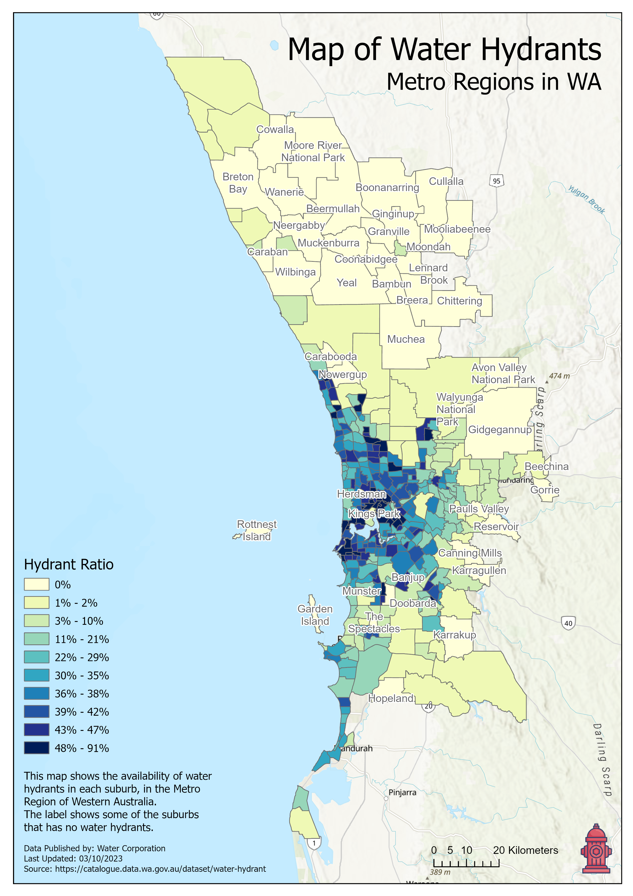
This is a choropleth map that I created in ArcGIS Pro using the data set from
Data WA website.
The map provides valuable insights into the distribution of fire hydrants
across the suburbs of Metro Regions in Western Australia.
The map highlights suburbs where these vital resources are absent,
clearly labeled for easy reference.
Suburbs lacking fire hydrants are prominently labeled,
drawing attention to areas where fire suppression resources may be limited.
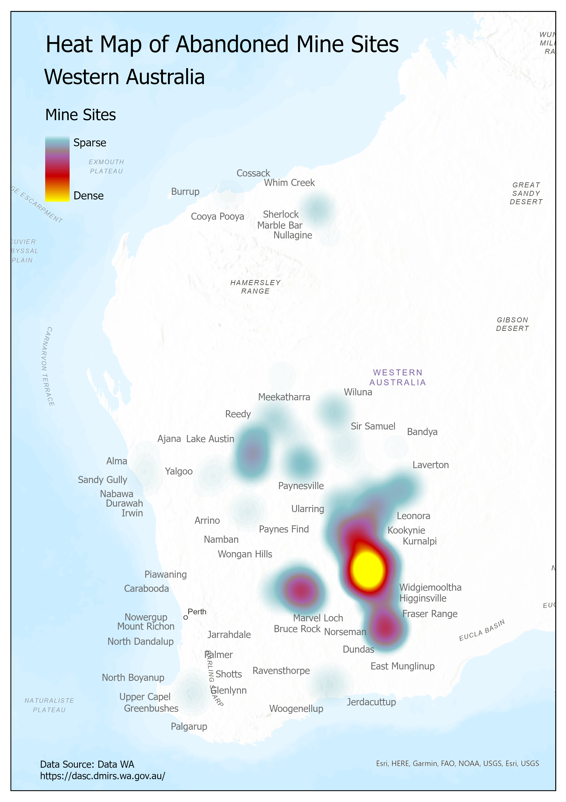
This is a heat map that I created in ArcGIS Pro using the data set from
Data WA website.
The Abandoned Mine Sites database is an inventory of abandoned mine sites recommended
by the Minerals Environment Liaison Committee in 1994.
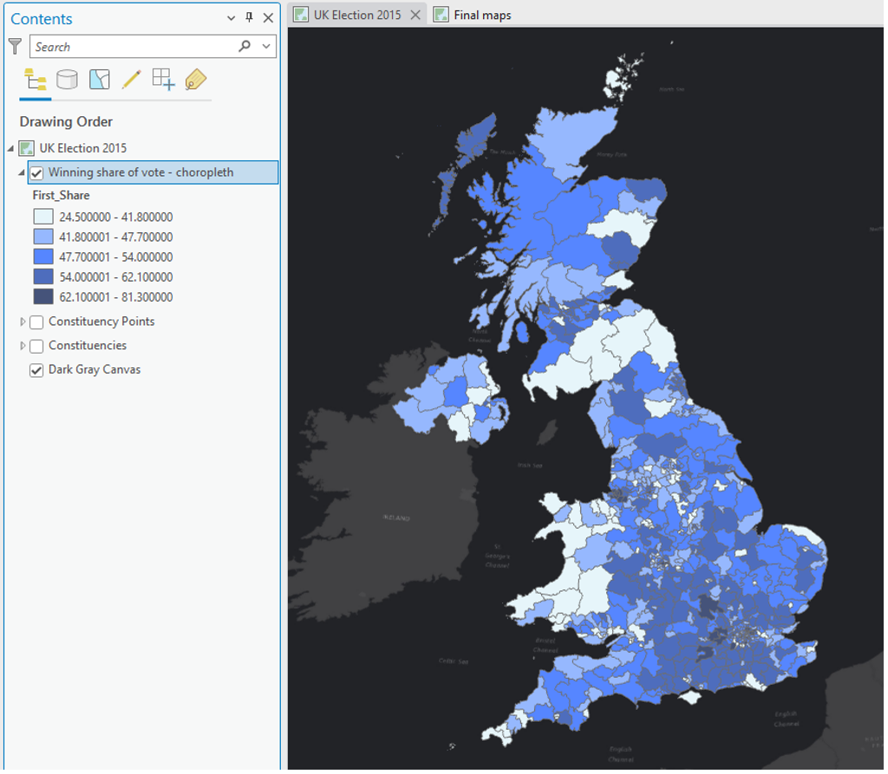
We have a map showing electoral constituencies for the 2015 UK Election.
A simple graduated colours (choropleth) map was created to show the share of votes that the winning member of Parliament (MP) received.
Graduated colours are used to symbolize the layer by quantities.
In this case, the quantity is the percentage or share of votes that the winner received.
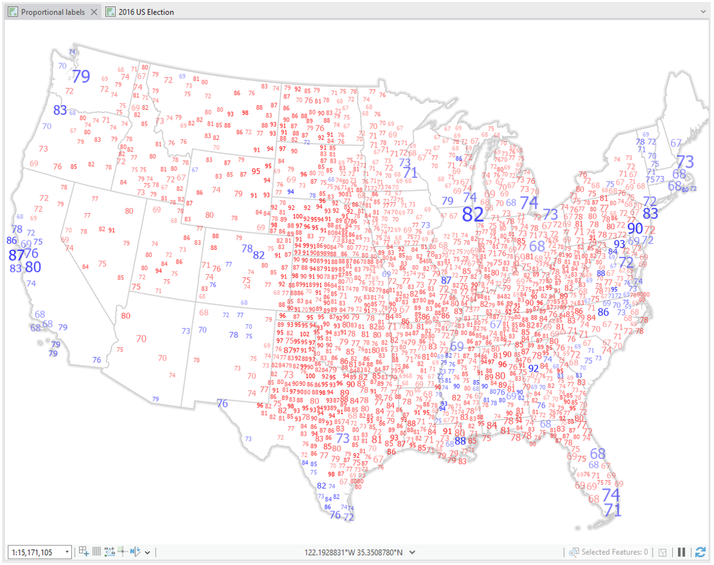
In this exercise, I created a map of proportional labels that have some additional meaning encoded through the use of colour.
I used, Arcade Expressions in ArcGIS Pro, which allows us to control many aspects of symbology by creating scripted expressions.
Like other expression languages, it can perform mathematical calculations and evaluate logical statements.
It was designed specifically for creating custom visualizations and labeling expressions in the ArcGIS platform, and
it provides a powerful way to customize your maps.
I also used Definition Query to filter out the labels that are not required to be displayed in the map.
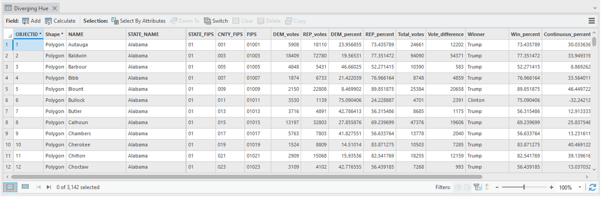
Example of the Definition Query used:
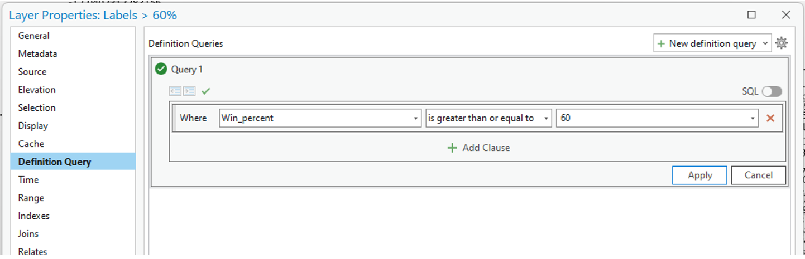
Example of one of the Arcade Expressions used to control the font size:
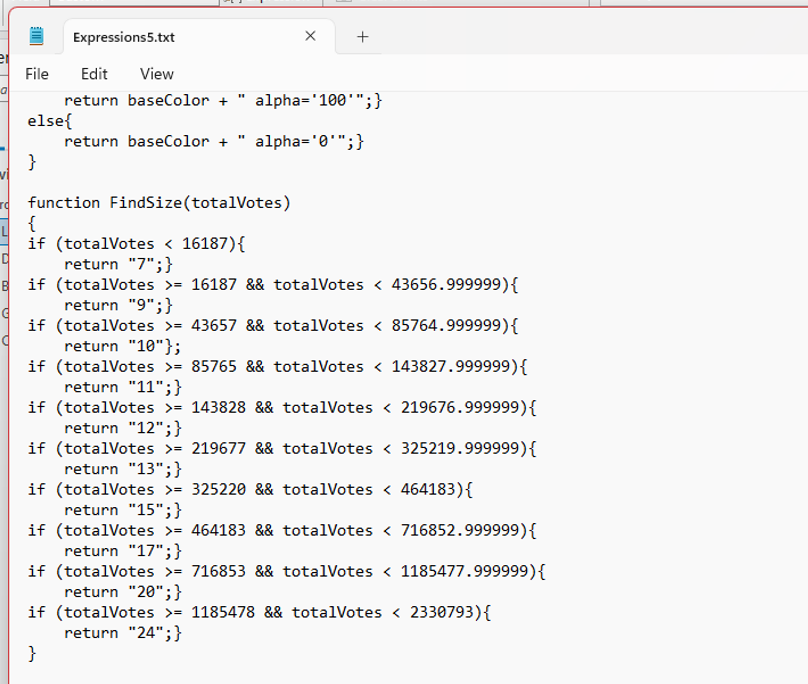
The LIDAR points show which objects and surfaces exist in the real world.
Filter out the non-ground LIDAR points so that you are only seeing points that are close to the current ground surface.
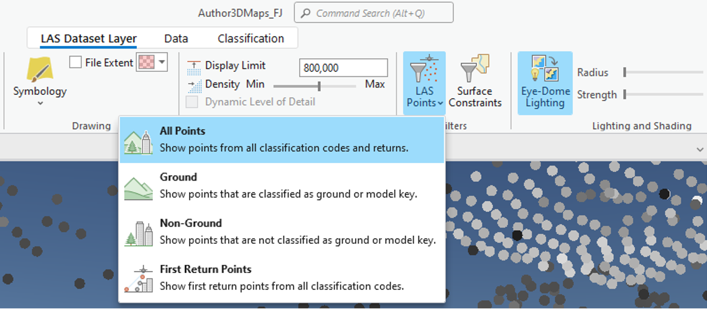
A higher-resolution elevation DEM (digital elevation model) was added into the scene.
This DEM was shaded relative to light position.
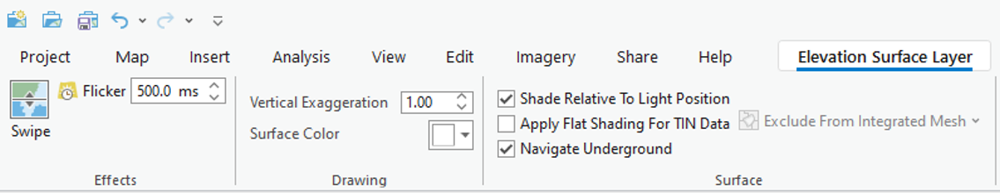
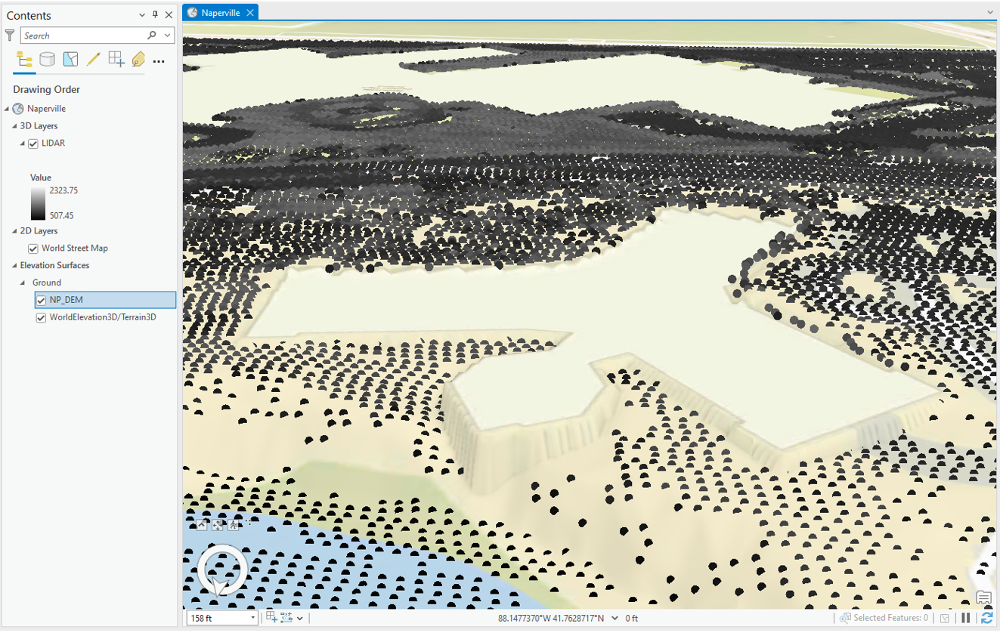
LIDAR turned off and Building Footprints layer added.
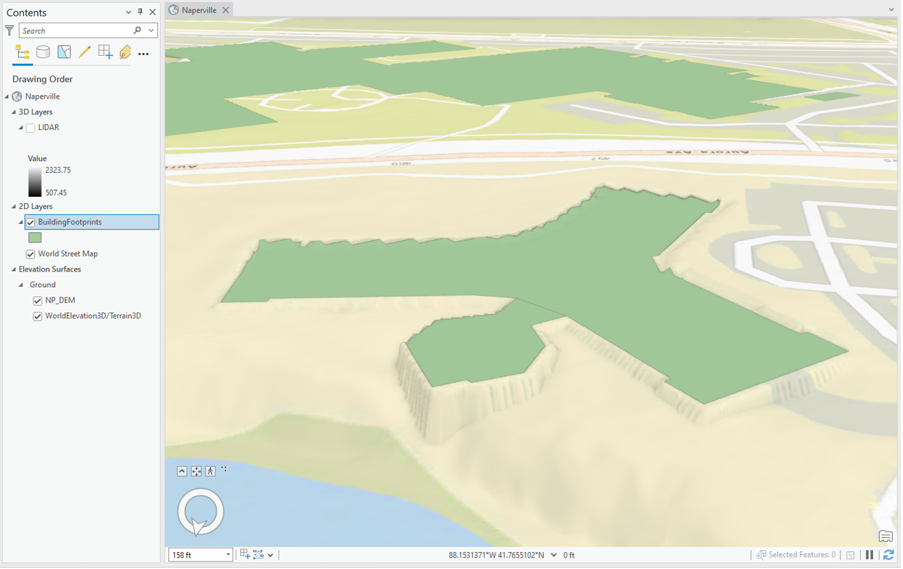
Extrusion was added to the layer.
Extrusion provides a simple method to create three-dimensional symbology from two-dimensional features.
Base Height type was used.
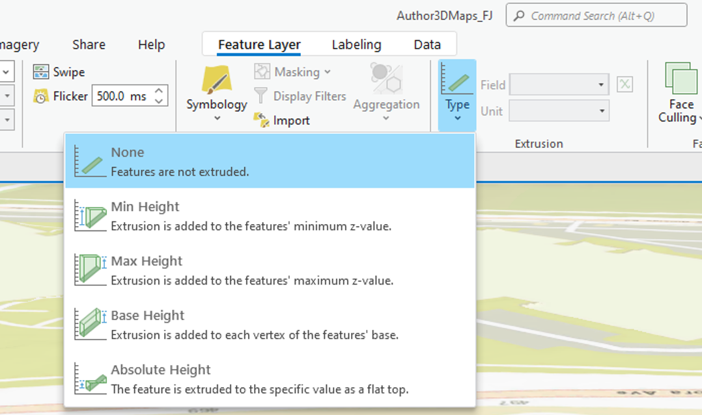
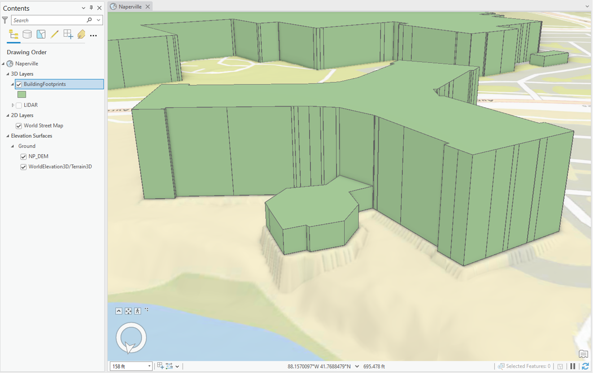
Final 3d Map
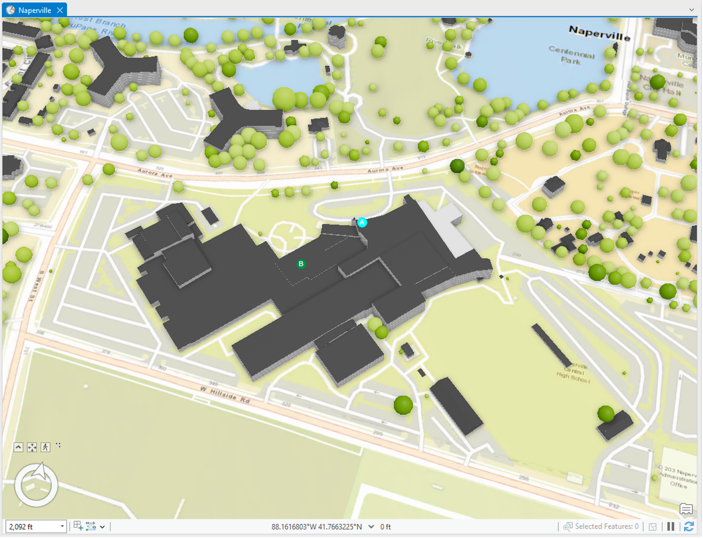
.